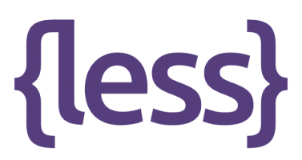
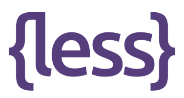

About
About my Heritage
My family is from the city of Guangzhou in the Guangdong province of China. As a Chinese American who came from 1st generation Chinese immigrants, I'm proud of my culture and the traditions I celebrate.
About the Website
My name in Matthew Cen and I'm a developer, programmer, systems administrator, and network engineer. I created this website with the intent to showcase the cultural components of my chinese heritage. I decided to separate my website into 3 different categories that consists of: Art, Food, and Music as I believe it would best represent my heritage.
The backend Stuff
This website is created from XHTML, HTML 5, CSS 3, LESS, SCSS, Javascript, Jquery
 



Frameworks used in this website included Normalize.css and MUI.css with fonts provided thanks to Google Fonts and icons provided thanks to Font Awesome. Analytics is provided with the help of Google Analytics and Cloudflare Analytics. The website is hosted on a full XXAMP stack running on a Windows Server 2016 Virtual Machine on an enterprise Dell R710 server (production environment). Content delivery provided thanks to Cloudflare CDN and Amazon CloudFront.